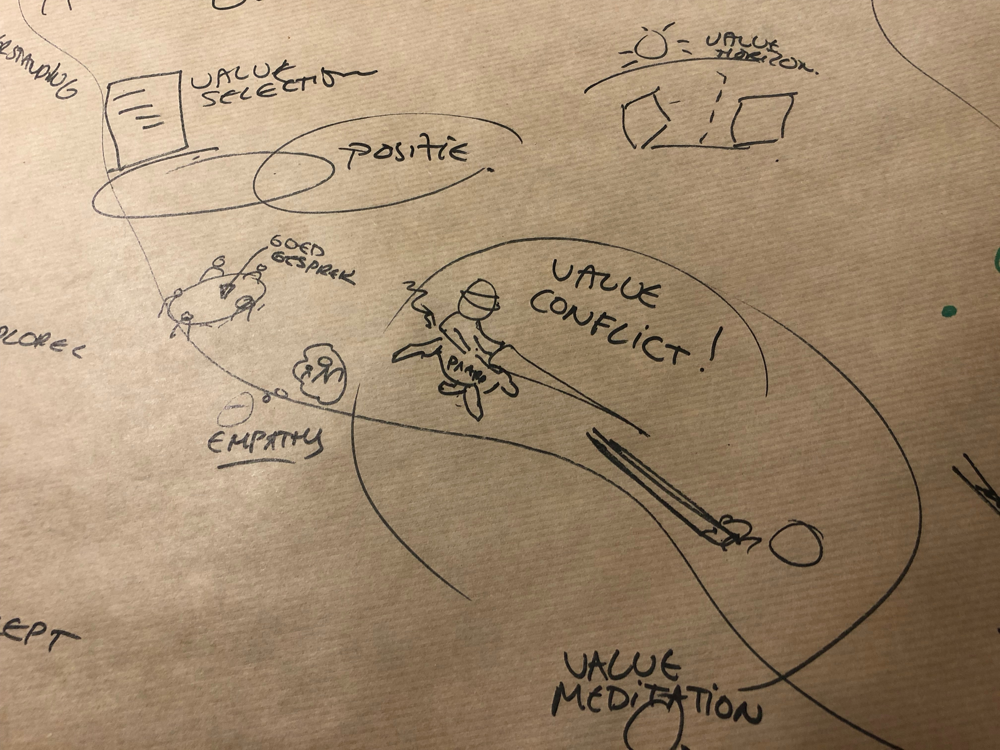
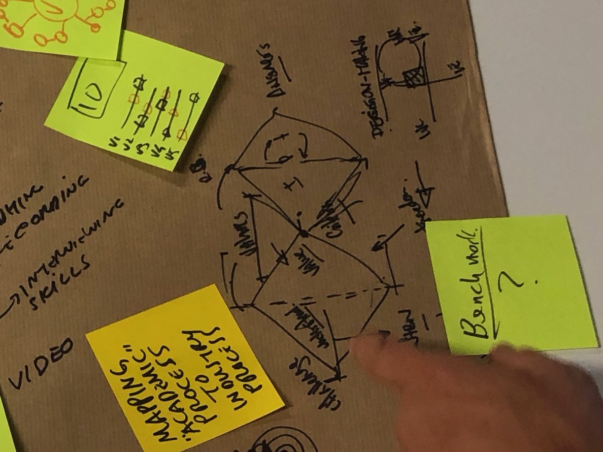
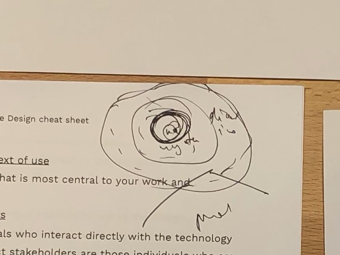

This time around we revisited a subject discussed at an earlier meetup: value sensitive design (VSD), a theoretical and methodological framework for putting human values at the heart of the design process.
Where in the previous meetup we mostly talked theory, this time around we focused on how we might adapt ideas from VSD to our own design and development process. To this end we spent time in groups discussing and sketching out the things we would need to be able to “do” VSD in our own practice.
To support and enable this discussion we started with a brief summary of the main ideas behind VSD, taken from the literature. We won’t repeat the substance of it here, but interested readers can refer to this blog post summary of Kars’s earlier lecture on the same subject.
During the talk we had some interesting conversations which included the need to be very clear about whose values we talk about: the designer’s, the user’s, or the organisation’s? Another thing that came up is the importance of taking the time to define in detail what the meaning of a value is. To go beyond superficial understandings of them.
In addition to the talk, we distributed a simple handout (PDF) which summarizes some aspects of value sensitive design.
The results from the group discussion and sketching covered a broad range of concerns.
Focused on the designer’s stance, that it won’t do to say that certain value concerns are out of scope. Even if you can’t personally deal with a value concern you are still the steward of the project and should work to address it somehow. A good mindset to have is to enjoy any value conflicts that may come up because those can be sources of inspiration, and also surface the things that need to be addressed. The group proposes to create tooling to 'gamify' value conflicts.
 Value conflict!
Looked at common UX methods and techniques which may be augmented with VSD-like features. Examples include:
 The double diamond
Zoomed in on the concept of indirect stakeholders, and the notion that figuring out what a value is, is a social process in stead of an individual process. They ask how to make VSD a group process without making it too confronting for a wide range of stakeholders to be involved. They also suggest helping teams with poor researcher and facilitator resources by creating lists of indirect stakeholders that are often forgotten.
 Gradually increasing the number of people involved
The discussion briefly touches on how to measure value support, and how to quantify the importance of a value so that businesses take concerns seriously. Apparently there is plenty of research that shows that anything that hurts trust impacts the bottom line. So if we can show that support of a value increases trust, that should be in the interest of business.
We also acknowledge that many designers are already overburdened with tasks, designer burnout is a real thing. They are expected to be good researchers, good visual designers, good frontend coders, etc. Adding VSD on top of all that could just be the straw that breaks the camel’s back.
We end the evening with convivial drinks and conversation, and look forward to continuing our work together on bringing these ideas to our wider community.
Original announcement:
Summer is near! We don‘t want to break our two-month rhythm so our next get-together happens Monday, August 6. For those that are still in the country it is probably the only event you are going to visit!
What are our plans? We thought we would do a mini summer camp on the topic we discussed in various earlier editions: How to bring ethics into your process. Some time ago we had a session on value sensitive design (VSD) and at our last meetup it came up as well in the context of machine learning. The conclusion was that it is a promising framework, so we would like to make it more practical. This session we will take a bit more time to dive deeper and especially take the opportunity to work together towards a tangible outcome.
What can VSD deliver? We'll find out by discussing and implementing VSD in a couple of cases in different groups. After that we'll reflect and discuss what kind of tooling is necessary to make this VSD approach practical for designers and programmers. Ideally, we end up with a sketch of the toolkit we need, one that we think can be used by everyone afterwards.
We hope we have a small group of smart people. We will of course prepare the sessions and present the state of VSD so that everyone is on the same page (whether or not you attended the previous session). Roughly the program will be:
We propose to work together in a shared space like a Risepad or a wiki to store all the findings and thoughts. We will look into possible tools but if you join and have specific ideas, please contact us. And if you have your own case, where ethical aspects play(ed) a role or one with various stakeholders within and outside of the organization, please let us know!
We meet at Sensor Lab in Utrecht on Monday, August 6. We start at 17:00 and wrap up around 21:00. (Doors open 16:30.) Admission fee is 5 euros payable at the door.
To RSVP, send an email to info@techsolidarity.nl. Hope to see you there!